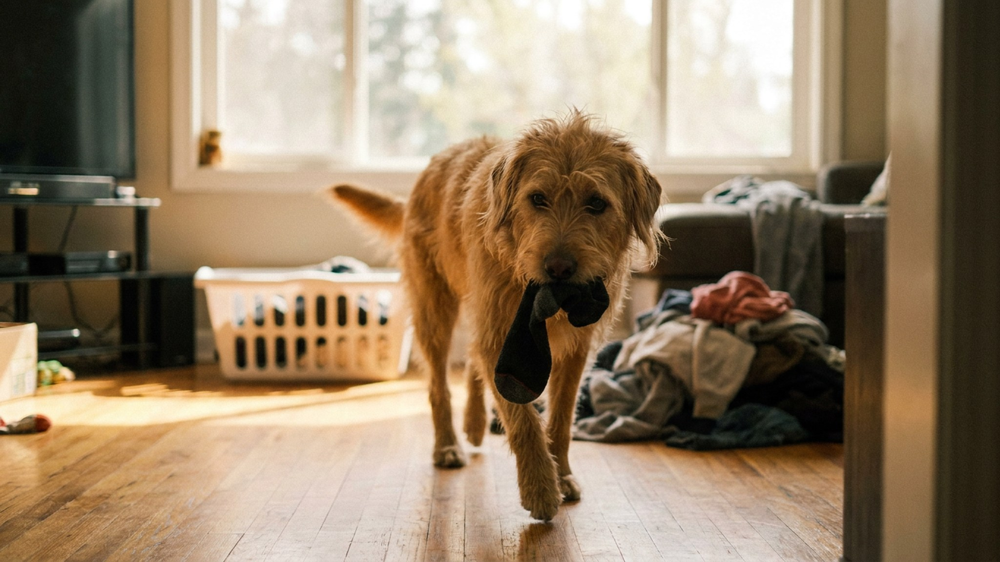

Носок исчезает в момент, когда вы отвернулись. Потом — торжественный бег по коридору с трофеем во рту. Это не случайность: собака точно знает, что делает, и делает это снова — потому что однажды это сработало. За привычкой стоит логика, которую несложно разобрать. И четыре конкретных шага, которые её ломают. Плюс одна причина, почему медлить с этим не стоит.
🐾 Здоровье питомца под контролем
AI-ветеринар, дневник здоровья и персональные советы для вашего питомца — установите AnimaLife бесплатно.
Собаки — эксперты по запаху. Их нюховый эпителий в 40 раз больше человеческого, и то, что кажется нам просто «ношеным носком», для собаки — насыщенная концентрированная история о хозяине. Запах пота, кожи, феромонов. Собака, которая тревожится при разлуке или просто скучает, буквально ищет утешение в запахе самого близкого существа.
Именно поэтому воруют чаще:
1. Запах хозяина как успокоение. Особенно характерно для собак с тревогой разлуки — пока вас нет дома, носок становится «якорем» безопасности. Некоторые собаки просто лежат с носком, не жуют его.
2. Игра в догонялки. Собака берёт носок, хозяин бежит отнимать — это прекрасная игра с погоней, вниманием и физической активностью. Собака запоминает: «взял носок → хозяин играет со мной». Даже раздражённый хозяин, который кричит «отдай», всё равно вовлечён — и это уже вознаграждение.
3. Скука и недостаток активности. Собака с избытком нерастраченной энергии ищет занятие сама. Носок — доступный, интересный, пахнущий объект. Идеальная игрушка по версии собаки.
Большинство собак не глотают носки — просто таскают и жуют. Но некоторые — особенно молодые собаки, крупные и мелкие породы с деструктивным жеванием — могут проглотить ткань или её фрагменты. Это уже повод для срочного визита к ветеринару. Если вы заметили, что собака проглотила кусок ткани — не ждите и не наблюдайте дома, идите к врачу.
Именно поэтому привычку лучше разорвать на стадии «таскает», а не ждать, пока она перейдёт в «ест».
Самый быстрый способ снизить частоту «воровства» — устранить возможность. Носки, ношенное бельё, всё что снимаете с себя — сразу в закрытую корзину или ящик. Одежда на полу, на стуле, в открытой корзине для стирки — это буфет, который собака будет посещать регулярно.
Это не решение проблемы, это снижение возможности тренировать привычку. Параллельно работайте над остальными шагами.
Если собака уже взяла носок — не бегите за ней. Не кричите «отдай», не гонитесь. Это именно то, чего она хочет. Вместо этого:
Цель — превратить «отдай» из требования в выгодную для собаки сделку. Отдала предмет → получила что-то лучшее. Это работает быстрее, чем любое наказание.
Собака, которая знает команду «дай» — отдаёт предмет добровольно. Обучить этому несложно, и это одновременно решает проблему носков и обогащает арсенал команд.
Если воровство носков — про скуку и недостаток активности: увеличьте прогулки, добавьте нюхательные игры (прятать лакомства в ковёр, нюхательный коврик), обучение новым командам, занятие носом — это отличный расход энергии.
Если про тревогу разлуки: дайте собаке разрешённый объект с вашим запахом — старую футболку в её лежанке. Пусть успокаивается законным способом. Параллельно работайте с самой тревогой разлуки — постепенное приучение к одиночеству, короткие уходы и возвращения.
Если про внимание: убедитесь, что собака получает достаточно игрового времени с хозяином. Игровые сессии по 15–20 минут дважды в день резко снижают количество «вот я придумала игру сама».
🐾 Первая помощь — всегда под рукой
AnimaLife подскажет, что делать в тревожной ситуации с питомцем ещё до визита к врачу. Откройте в один тап.
🐾 Понравился разбор?
Подпишитесь на канал — каждый день разбираем по одному тревожному симптому у кошек и собак: что в пределах нормы, а когда пора к врачу. Подпишитесь, чтобы не пропустить разбор, который может спасти здоровье вашего питомца.
Материал носит информационный характер и не заменяет очную консультацию ветеринара.